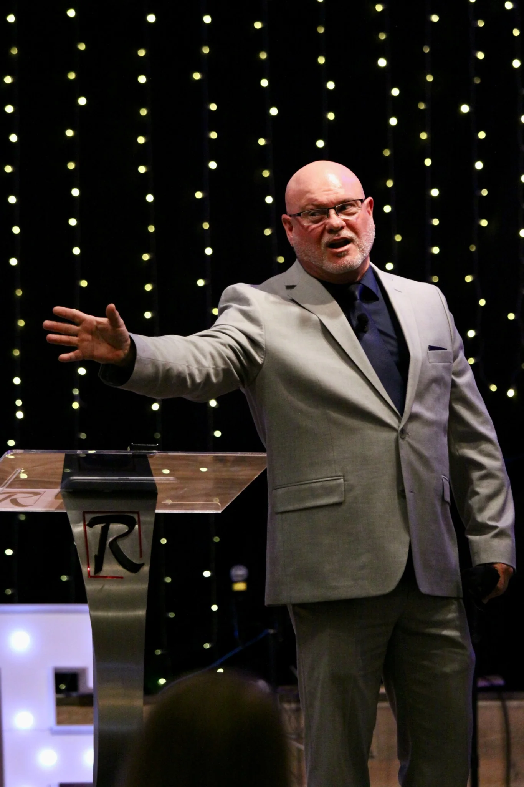

ONE CHURCH. ONE KINGDOM VISION. UNLIMITED PURPOSE.
Scroll to discover ↓
MORE THAN A
CHURCH.
A CALLING.
We exist to help people discover the purpose God placed within them, grow through the truth of His Word, and live out His Kingdom here on earth.
Our vision is simple and bold: Reclaiming God’s original intent for mankind.
FAITH IS BUILT
ON THE WORD.
Dive into biblical teaching, sermons, and conversations designed to strengthen your faith and equip you for everyday Kingdom living.
Watch the latest messagesA VISION WITH
A PROCESS.
We are committed to a practical process of helping people see what God can do, renew their minds, grow in their calling, and impact others.
Exposure
Changing what we see expands what we can believe and pursue.
Empowerment
Renewing minds through God’s Word, relationships, and wisdom.
Equipping
Discovering your God-given purpose and building up the people around you.
Expand
Releasing gifts and multiplying impact through a lifestyle of honor.
COME AS YOU ARE.
GROW IN PURPOSE.
Watch online
Explore sermons and messages from Reformation Church.
Explore messages ↗Follow the journey
Connect through our growing community across social media.
Connect with us ↗YOUR NEXT STEP
STARTS HERE.
We’d love to connect with you at Reformation Church.